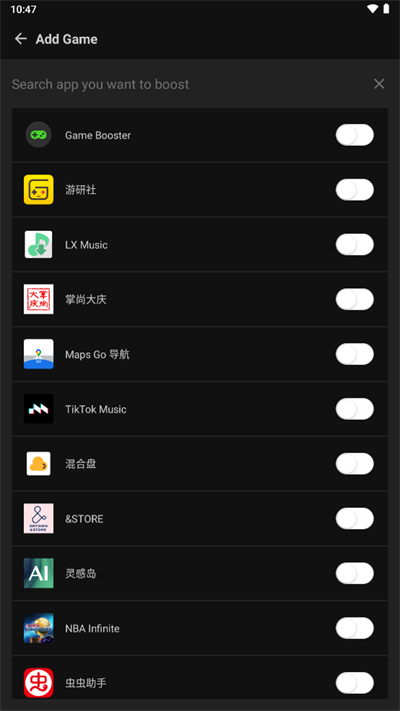
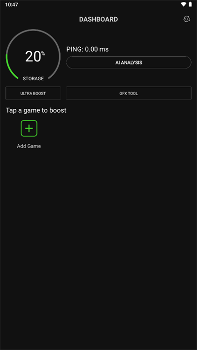

GameBooster GFX TOOL 实战：给安卓游戏画质做减法的完整步骤
安卓游戏跑不动发热降频？GameBooster 把画质调整集中到一个界面，从安装到调参到启动，一步一步带你把帧率稳下来。
这篇教程走完，你能用 GameBooster 给自己安卓机上的每款游戏调好一套画质预设，并且每次启动都自动生效。
准备：先搞清三件事
- 版本：GameBooster官网标注的 v2.1.5 是目前稳定版，功能完整。
- 平台：安卓 8.0 以上，不支持 iOS。走网盘分发，应用商店搜不到。
- 前置条件：手机上已经装了至少一款游戏。GameBooster 是给已有游戏调画质用的，本身不提供游戏。
还有一点要提前说清楚：GFX TOOL 调的是游戏本地图形设置项，和你手动进游戏设置菜单改分辨率是同一类操作。它不注入、不改内存、不替换文件，本质是把分散的设置集中到一个入口。帧率上限最终由硬件决定，降画质换流畅是基本盘，不是什么黑科技。
第一步：安装 GameBooster
从官方下载获取 APK 安装包，覆盖安装即可。包名是 com.g19mobile.gamebooster，系统会自动识别为升级。首次启动需要授权存储、通知和无障碍权限——跟着弹窗一路点允许就行。
如果之前用过旧版本，设置会自动保留。稳妥起见可以截一张 DASHBOARD 配置图存档，以防万一。
第二步：把游戏加到列表
GameBooster 启动后进入 DASHBOARD 首页，右上角有个「添加游戏」按钮。点进去，它会自动扫描手机上已安装的游戏，打勾选你要管理的，确认后就能进主列表了。

这里别贪多，先选两三个常玩的就行。加太多管理起来乱，而且不同游戏最优参数不一样，每个都得单独调。
第三步：进 GFX TOOL 调参数
列表里每个游戏卡片下方有个 GFX TOOL 按钮，点进去就是本次教程的核心界面。GameBooster v2.1.5 提供四类参数，我们逐项看：
分辨率（SD / HD / FHD）
SD 约 720p，GPU 负载最低；HD 约 1080p，画面和性能最均衡；FHD 1440p+，锐利但吃算力。旗舰机直接 FHD，中高端机从 HD 起步，低配机先用 SD 跑稳再说。分辨率是省性能最直接的一档，从 FHD 降到 HD GPU 负载能降 30%~40%。
帧率上限（30 / 60 / 90 fps）
想锁 60 帧就选 60。注意 90 帧选项只有部分游戏支持，而且就算开了，能不能稳定跑满还是看 GPU 和机身温度。长时间游戏建议先关阴影再开 60，比硬开 90 实际得多。
阴影开关（ON / OFF）
阴影是比贴图更吃算力的效果——实时计算每个光源和物体投影方向。关掉能省 15%~25% GPU 负载，画面损失相对可接受，很多玩家甚至不会立刻注意到阴影没了。竞技类游戏反而建议关，阴影偶尔会遮挡视线。
抗锯齿（2x / 4x / OFF）
抗锯齿让边缘更平滑，但对 GPU 也有消耗。如果前面几项已经把负载压下去了，开 2x 或 4x 都行；低配机直接 OFF 别纠结。
调完别急，在这个界面确认一遍，退出后参数就保存了。更多参数搭配和不同游戏的最佳方案，GameBooster文档里有详细案例。
第四步：从 DASHBOARD 启动游戏生效
参数调好了，但不会自动应用。必须从 GameBooster DASHBOARD 点击对应游戏卡片启动，刚才调的参数才会生效。直接点手机桌面的游戏图标进，等于白调。

退出游戏后，本次优化随之结束——GameBooster 不会常驻后台注入，每次进游戏都得从它启动再应用一遍。这是个好习惯，强制你每次进游戏都确认一下参数。
常见卡点：三个新手最容易翻车的地方
卡点一：参数改了感觉没变化
八成是没从 DASHBOARD 启动。退出来重新点 GameBooster 里的游戏卡片进一次，你会明显看到分辨率和帧率都变了。
卡点二：分辨率调太低画面出问题
有些游戏有最低分辨率要求，调到 SD 可能出现贴图缺失、UI 错位。往上调一档到 HD 就好，别硬撑。
卡点三：阴影关了感觉没变
部分老游戏阴影是强制开启的，GFX TOOL 控制不了。如果切到 OFF 但进游戏阴影还在，说明这个参数对该游戏不生效，换调整分辨率试试。
进阶一句话
搞定这一套后，可以试试给不同游戏分别存一套参数——竞技类关阴影锁 60，剧情类开 FHD 保留阴影，各自最优。另外记得关注更新，GameBooster 不走应用商店推送，有新版本从官网拿覆盖安装就行。